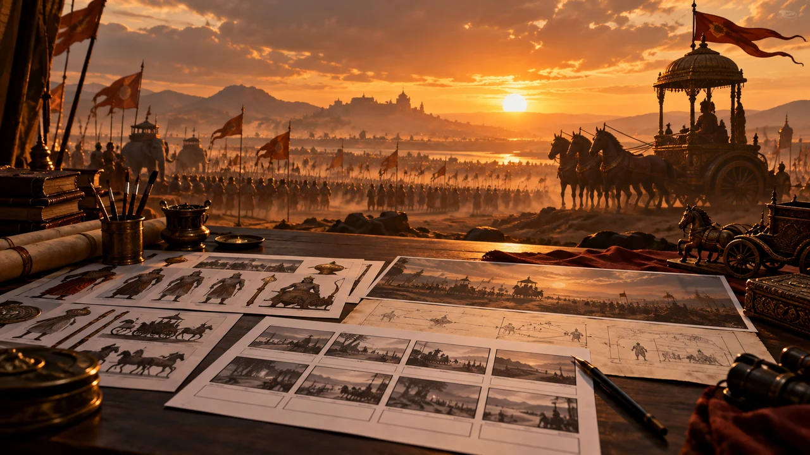

Confirm the assigned story
Record the reference and link, key characters, selected sequence and creative direction in Homework. Keep the topic aligned to the assigned reference.

WEEK 5 · DAY 2 · PLAYBOOK
Record the story beats, screenplay, and shot map so the team can produce consistently.
OPEN OFFICIAL HOMEWORK DOCPRACTICE WORKFLOW
Record the reference and link, key characters, selected sequence and creative direction in Homework. Keep the topic aligned to the assigned reference.
Draft the script, review it as a team, and lock it before building the shot list. Keep dialogue purposeful and the story visually clear.
Choose a hero frame or style reference. Add optional character, prop and background references only where they help maintain continuity.
Create a row per shot with scene/action, camera and movement, lighting/color, image prompt, video approach, dialogue or sound, and duration. Image and video leads shape the list together.
Check the screenplay and shot plan together. Note any open production question for the next stage.
SOURCE PROMPTS
Attach the approved screenplay and relevant style or character references before using a prompt. Adapt reference placeholders only to assets your team may use.
Source: Mahabharata workflow presentation by Mithun Palliyalil, Canva
I have attached the script. Also ref images of the cinematic style which I want in terms of lighting and cinematogrphy. Remember this is a complete end to end AI production. Now you act as a world class Film director, and come up with a complete shot list table which also has prompts required for each shots image generations. Also remember I have character sheet for main characters. so in the prompts include placeholders whenever a main character is coming. The lighting coloring should be consistent throughout. Also individual prompts for main elemnts such as Gandiva, the game board, chariot wheel etc. The shot list should look world class like the horiziontal shot list they use in hollywood for production.
Source: Mahabharata workflow presentation by Mithun Palliyalil, Canva
Ultra-photorealistic character sheet of Arjuna from the Mahabharata. CRITICAL: The character's face, facial features, and skin tone MUST strictly match ONLY @image1 @image2 @image3 @image4 . Do not alter the face. The character's hairstyle should match @image6 . The outfit should exactly match @image5 (use this reference for clothing and armor ONLY, ignore the face in this reference). Features realistic ancient Indian warrior attire, authentic metal armor, woven fabrics, and ornate jewelry suitable for a live-action historical epic. Neutral, heroic expression. Cinematic studio lighting, realistic shadows, hyper-detailed skin texture with visible pores, subsurface scattering, and natural imperfections. Include full character turnaround: Front view (neutral pose), Left side profile, Right side profile, 3/4 angle view. Add expression sheet: Neutral, Slight smile, Confident smile, Serious/Battle-ready, Confused. Add detail callouts: Close-up of eyes (accurate color, iris detail, and shape), realistic hair texture, and intricate armor/fabric material details. Style: 100% photorealistic, live-action cinema, 8k resolution, highly detailed photography, neutral grey background, consistent proportions across all views.
Source: Mahabharata workflow presentation by Mithun Palliyalil, Canva
Ultra-photorealistic character sheet of Draupadi (Panchali) from the Mahabharata. CRITICAL: The character's face, facial features, and skin tone MUST strictly match ONLY [ @image1 @image2 @image3 ]. Maintain the exact bone structure, iris detail, and facial proportions. Character Sheet Layout: Full turnaround including Front view (regal standing pose), Left side profile, Right side profile, and 3/4 angle view. Add an expression sheet: Serene/Regal, Gentle smile, Commandingly serious, Emotional/Vulnerable, and Intense/Determined. Costume & Hair (Cinematic Reconstruction): An elaborate, high-end ancient Indian royal ensemble. She wears a fine silk sari in deep crimson and gold (symbolising her birth from fire), draped elegantly in a classical Vedic style. The fabric should have visible thread-work, intricate golden embroidery, and a realistic weight. Her hair is iconic: long, thick, raven-black, and wavy, flowing down to her waist but styled with a gold Maang Tikka and pearls. Jewellery: Authentic ancient Indian temple jewellery in 22k gold, including a heavy Choker and long Haar necklaces, intricate Bajuband (armlets), Kangan (bangles), and a traditional nose ring (Nath). All jewellery must have realistic metallic reflections and gemstone inlays (rubies and pearls). Technical Style: 100% photorealistic, live-action cinema quality, hyper-detailed skin texture with visible pores and natural imperfections, subsurface scattering for realistic skin glow. 8k resolution, cinematic studio lighting with soft shadows, neutral grey background, consistent proportions across all views. Detail Callouts: Close-up of the eyes (matching the likeness reference), macro view of the golden embroidery on the silk, and a detailed view of the intricate gold jewellery.
Source: Mahabharata workflow presentation by Mithun Palliyalil, Canva
Kunti Devi (The Rajmata) Theme: Dignity, wisdom, maternal strength, and understated royalty. Ultra-photorealistic character sheet of Kunti Devi from the Mahabharata. CRITICAL: The character's face and skin tone MUST strictly match ONLY [ @image1 @image2 @image3 ]. Her expression should carry the weight of her history-wise and slightly sorrowful but very dignified. Costume: A sophisticated, high-end silk sari in ivory and muted gold (Rajmata style). The fabric should have a soft, realistic sheen and intricate hand-woven textures. She wears the pallu elegantly over her head. Jewelry: Sophisticated and traditional ancient Indian jewelry-a single heavy gold necklace, simple but large gold earrings (Karnaphool), and traditional bangles. No crown, but a subtle gold headpiece (Maang Tikka) visible under the sari veil. Layout: Full turnaround (Front, Side, Back, 3/4). Expression sheet: Serene/Wise, Sorrowful/Reflective, Maternal smile, Commanding presence. Style: 100% photorealistic, soft studio lighting, 8k resolution, hyper-detailed silk textures and aged, realistic skin, neutral grey background.
Source: Mahabharata workflow presentation by Mithun Palliyalil, Canva
Ultra-realistic professional studio portrait of the same person in the same costume, clean minimal background, soft neutral tones (white/grey), high-end fashion photography, sharp facial details, natural skin texture, soft diffused studio lighting, subtle shadows, centered composition, 85mm lens, shallow depth of field, no distractions, no props, polished and elegant look. Strictly should look like the person from the attached reference.
TOOLS AND REFERENCES
Compare the sample rows for camera, lighting, image prompt, sound, dialogue, and duration. Then build your own sheet.
Open workbook ↗Draft a screenplay or keep the official homework record. Use the official Homework Doc for this session’s answers.
Open Homework Doc ↗Optional screenplay writing tool used in the walkthrough.
Use for image generation as your workflow allows; share credits fairly when working as a team. Keep approved character and style references consistent across shots.
Open the project character reference workbook ↗ · Open the source presentation ↗
The Canva tools slide assigns Claude and Gemini to character sheets, props, and shot images; Lemonpeel to image and video generation; Google Flow to prop images and the Scene 1 first frame; ElevenLabs to voiceover and dialogue; Pixabay to music and sound effects; and YouTube to inspiration and idea adaptation. These are workflow options, not required subscriptions; the deliverables stay the same.
The Canva workflow lists Lemonpeel for image generation and video generation.
The Canva workflow lists YouTube for inspiration and idea adaptation.
FINAL REVIEW
Tick each item after reviewing the screenplay and production sheet.
SKILL CHECK